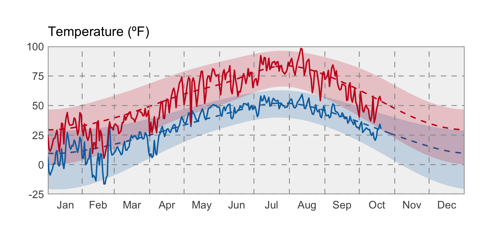

Summer 2018: Drought?
Four-footed fans of the Montana Mesonet visit the new station near Broadus, MT. Photo: Kevin Hyde.
 Temperature
Temperature
Aside from a period in early August, temperatures this summer were below normal across much of central Montana, and above normal in northeastern and western Montana. Warm conditions in western Montana contributed to drought declarations in the northwestern part of the state, and led to fears of an above-average fire season which mercifully didn’t materialize.
The graph below compares historical daily temperatures (shaded bands and dashed lines) to current daily temperatures in January thru August 2018 (solid-jagged lines) across Montana. The shaded bands represent the range of recorded temperatures during the 1981–2010 period on any given day. The red bands and lines represent the high temperatures and the blues bands and lines represent the lows. The dashed red and blue lines represent the average high and average low temperatures during the 1981–2010 period.

 Precipitation
Precipitation
In general, precipitation was above normal across south-central and eastern Montana this summer, and below normal across northern and western Montana. Portions of southern Montana experienced over double the normal amount of summer precipitation! Much of this happened in June, however; July and early August were closer to average across the state.
The graph below compares historical daily precipitation (shaded band and dashed line) to current daily precipitation in January thru August 2018 (vertical bars) across Montana. The shaded band represent the range of recorded precipitation during the 1981–2010 period on any given day. The dashed line represents the average precipitation during the 1981–2010 period.
 Drought
Drought
By the end of the summer, the US Drought Monitor had declared most of the northern and western portions of Montana to be abnormally dry, with north-central and northwestern portions of the state under drought conditions. This aligns with precipitation patterns from the summer, but see the sections on soil moisture and evapotranspiration, which tell a slightly different story. In northwestern Montana, a deficit of soil moisture and groundwater will need to be resupplied by winter snowpack and spring rainfall in order for drought declarations to be lifted before next year’s growing season.
 Soil Moisture
Soil Moisture
Soil moisture is factored into forecasts as an indicator of wet or dry basin conditions and the potential for drought or flooding. Throughout the summer, the majority of Montana east of the Rockies enjoyed soil moisture surpluses (the blue areas in the map below), due to our above normal winter snowpack, protracted snowmelt, and above-average summer precipitation in south-central Montana. However, west of the Rockies experienced a soil moisture deficit (the yellow and orange areas) due primarily to below-normal precipitation.

Evapotranspiration
Evapotranspiration (ET), or the amount of water vapor leaving the Earth’s surface through evaporation and plant photosynthesis, reflects both the amount of plant-available water and the atmospheric demand for water (i.e., how dry the air is). The plot and graph below show the deviation from normal ET at the end of this summer. In the map, the green areas experienced greater amounts of ET than their normal amounts from 2000–2016 (the period of record); the brown areas experienced less ET.
In the graph below, the green line represents the average ET through the year, and the green band represents the extremes recorded during the 2000–2016 period. The jagged black line represent this year’s conditions; the jagged red line represents the 2017 conditions, for reference. Across Montana, 2018 ET has remained above average—reflecting that atmospheric demand was met by wetter than normal soil conditions. In contrast, 2017 ET declined to below-normal values from early June through the early September, reflecting last summer’s drought conditions.